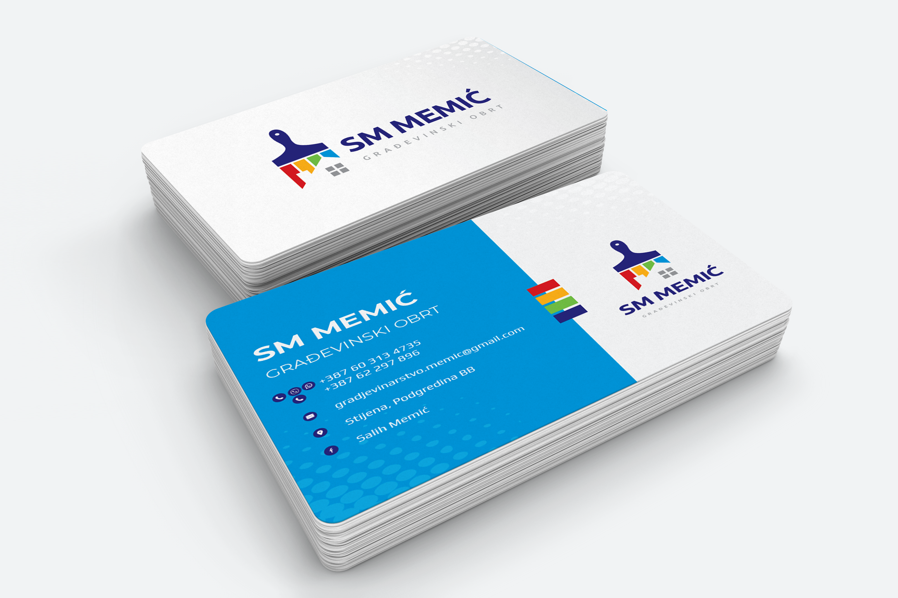
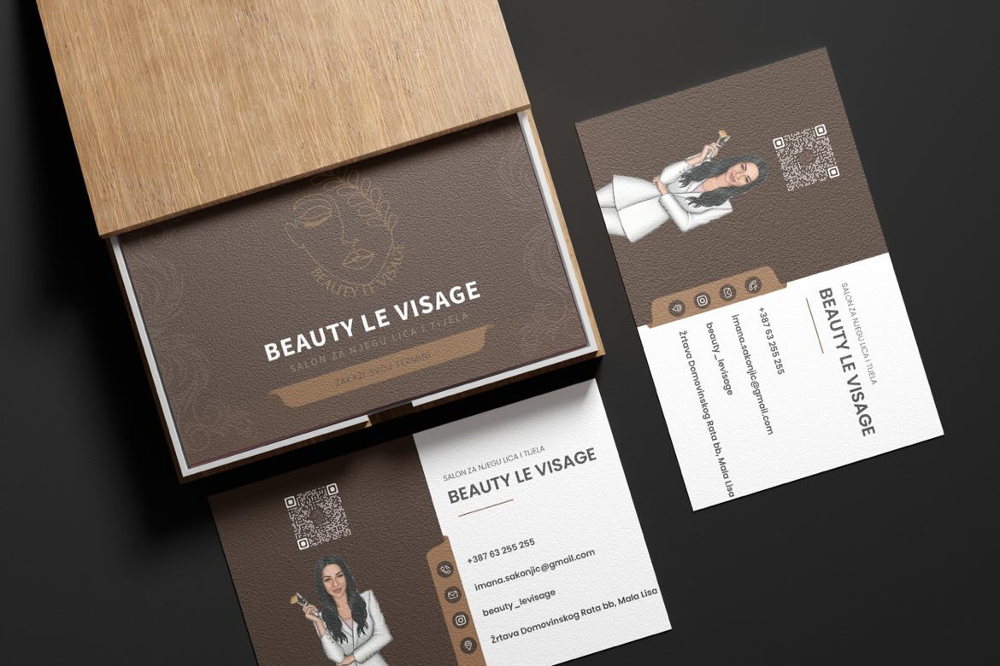
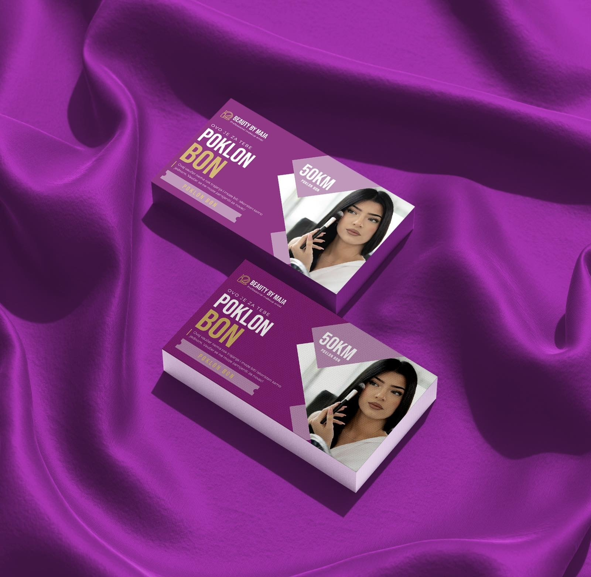
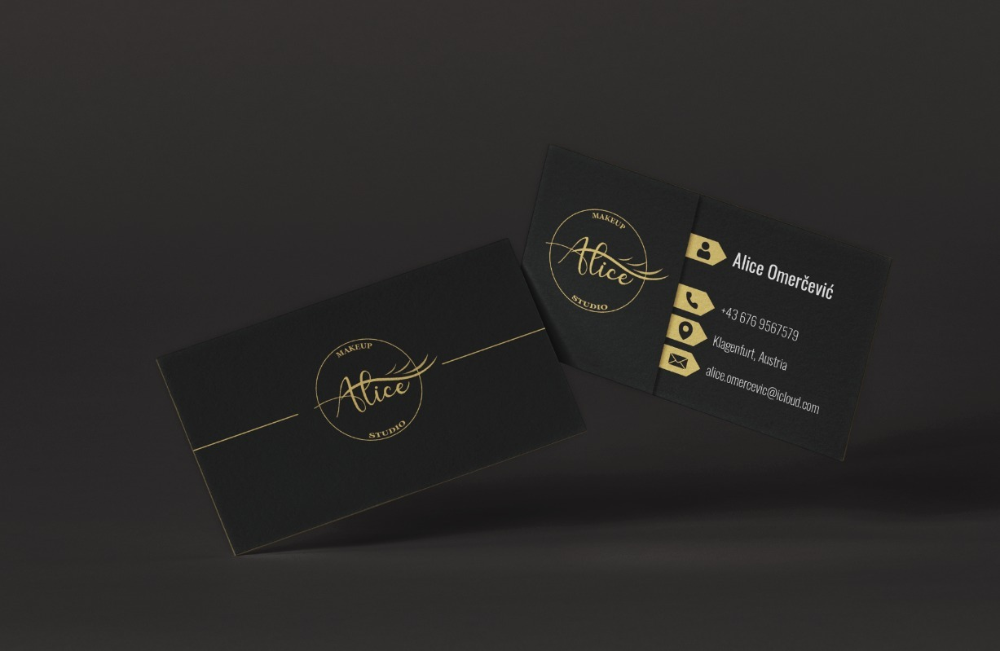

DesignDizajn
Business CardsBiznis Karte
The goal of this project was to create a professional and memorable business card that reflects the brand’s identity. I focused on clean typography, balanced layouts, and carefully selected colors to create a design that feels modern, distinctive, and easy to recognize. Cilj ovog projekta bio je kreirati profesionalnu i upečatljivu vizitkartu koja odražava identitet brenda. Fokusirao sam se na čistu tipografiju, uravnotežen raspored elemenata i pažljivo odabrane boje kako bih postigao moderan, prepoznatljiv i vizuelno skladan dizajn.



